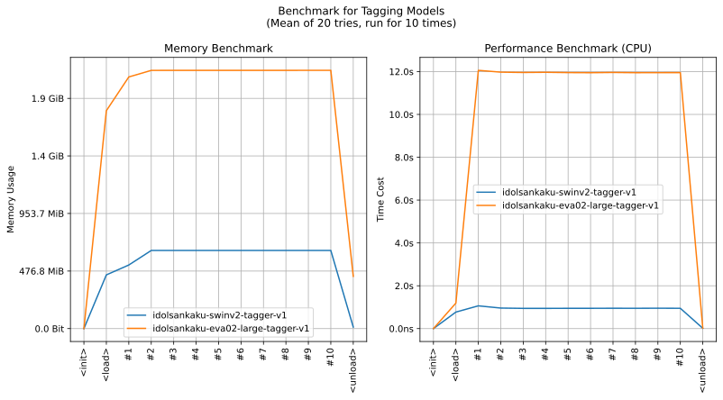
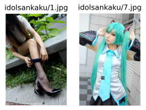

realutils.tagging.idolsankaku
- Overview:
This module provides utilities for image tagging using IdolSankaku taggers. It includes functions for loading models, processing images, and extracting tags.
The module is inspired by the SmilingWolf/wd-tagger project on Hugging Face.
Overview of IdolSankaku (NSFW Warning!!!)

This is an overall benchmark of all the idolsankaku models:

get_idolsankaku_tags
- realutils.tagging.idolsankaku.get_idolsankaku_tags(image: str | PathLike | bytes | bytearray | BinaryIO | Image, model_name: str = 'SwinV2', general_threshold: float = 0.35, general_mcut_enabled: bool = False, character_threshold: float = 0.85, character_mcut_enabled: bool = False, no_underline: bool = False, drop_overlap: bool = False, fmt=('rating', 'general', 'character'))[source]
Get tags for an image using IdolSankaku taggers.
This function is similar to the SmilingWolf/wd-tagger project on Hugging Face.
- Parameters:
image (ImageTyping) – The input image.
model_name (str) – The name of the model to use.
general_threshold (float) – The threshold for general tags.
general_mcut_enabled (bool) – If True, applies MCut thresholding to general tags.
character_threshold (float) – The threshold for character tags.
character_mcut_enabled (bool) – If True, applies MCut thresholding to character tags.
no_underline (bool) – If True, replaces underscores in tag names with spaces.
drop_overlap (bool) – If True, drops overlapping tags.
fmt – Return format, default is
('rating', 'general', 'character').embeddingis also supported for feature extraction.
- Returns:
Prediction result based on the provided fmt.
Note
The fmt argument can include the following keys:
rating: a dict containing ratings and their confidencesgeneral: a dict containing general tags and their confidencescharacter: a dict containing character tags and their confidencestag: a dict containing all tags (including general and character, not including rating) and their confidencesembedding: a 1-dim embedding of image, recommended for index building after L2 normalizationlogit: a 1-dim logit of image, before softmax.prediction: a 1-dim prediction result of image
You can extract embedding of the given image with the follwing code
>>> from realutils.tagging import get_idolsankaku_tags >>> >>> embedding = get_idolsankaku_tags('idolsankaku/1.jpg', fmt='embedding') >>> embedding.shape (1024, )
This embedding is valuable for constructing indices that enable rapid querying of images based on visual features within large-scale datasets.
- Example:
Here are some images for example
>>> from realutils.tagging import get_idolsankaku_tags >>> >>> rating, general, character = get_idolsankaku_tags('idolsankaku/1.jpg') >>> rating {'safe': 0.748395562171936, 'questionable': 0.22442740201950073, 'explicit': 0.022273868322372437} >>> general {'1girl': 0.7476911544799805, 'asian': 0.3681548237800598, 'skirt': 0.8094233274459839, 'solo': 0.44033104181289673, 'blouse': 0.7909733057022095, 'pantyhose': 0.8893758654594421, 'long_hair': 0.7415428161621094, 'brown_hair': 0.4968719780445099, 'sitting': 0.49351146817207336, 'high_heels': 0.41397374868392944, 'outdoors': 0.5279690623283386, 'non_nude': 0.4075928330421448} >>> character {} >>> >>> rating, general, character = get_idolsankaku_tags('idolsankaku/7.jpg') >>> rating {'safe': 0.9750080704689026, 'questionable': 0.0257779061794281, 'explicit': 0.0018109679222106934} >>> general {'1girl': 0.5759814381599426, 'asian': 0.46296364068984985, 'skirt': 0.9698911905288696, 'solo': 0.6263223886489868, 'female': 0.5258357524871826, 'blouse': 0.8670071959495544, 'twintails': 0.9444552659988403, 'pleated_skirt': 0.8233045935630798, 'miniskirt': 0.8354354500770569, 'long_hair': 0.8752110004425049, 'looking_at_viewer': 0.4927205741405487, 'detached_sleeves': 0.9382797479629517, 'shirt': 0.8463951945304871, 'tie': 0.8901710510253906, 'aqua_hair': 0.9376567006111145, 'armpit': 0.5968506336212158, 'arms_up': 0.9492673873901367, 'sleeveless_blouse': 0.9789504408836365, 'black_thighhighs': 0.41496211290359497, 'sleeveless': 0.9865490198135376, 'default_costume': 0.36392033100128174, 'sleeveless_shirt': 0.9865082502365112, 'very_long_hair': 0.3988983631134033} >>> character {'hatsune_miku': 0.9460012912750244}